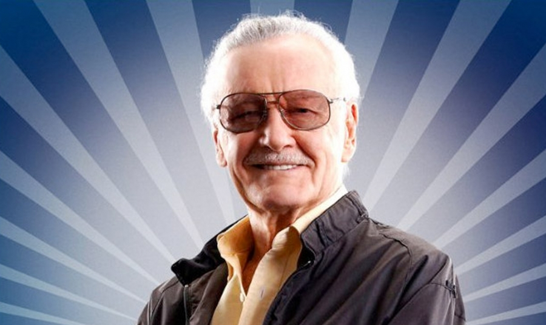
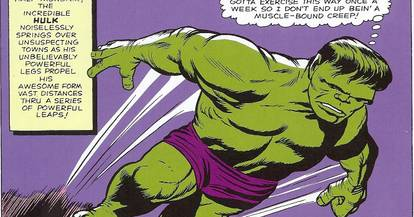

Ommagio a Stan Lee
Stanley Martin Lieber (1922 - 2018)
Excelcior!
Stan Lee, è noto per essere stato presidente e direttore editoriale (Editor in Chief)
della casa editrice di fumetti Marvel Comics, per la quale ha sceneggiato
numerose storie.
Conosciuto anche come The Man (L'Uomo) e The Smilin (Il Sorridente),
ha introdotto per la prima volta, insieme con diversi artisti e
co-creatori, in special modo Jack Kirby e Steve Ditko,
personaggi di natura complessa e con personalità sfaccettate
all'interno dei comic book supereroistici. Il suo successo permise
alla Marvel di trasformarsi da piccola casa editrice in una grande
azienda di stampo multimediale.
Personaggi Principali Creati
Spiderman
Fantastic 4
Avengers

Hulk

X-Men

Sequenza Temporale
- Nato Stanley Martin Lieber il 28 dicembre 1922.
- Il principale leader creativo della Marvel Comics per due decenni, guidando la sua espansione da una piccola divisione di una casa editrice a una società multimediale che dominava l'industria del fumetto.
- Sposò Joan Clayton Boocock il 5 dicembre 1947. La loro figlia Joan Celia "J.C." Lee nacque nel 1950. Un'altra figlia, Jan Lee, morì tre giorni dopo la consegna nel 1953.
- Jack Kirby e Steve Ditko hanno co-creato numerosi personaggi di fantasia popolari, tra cui Supereroi Spider-Man, X-Men, Iron Man, Thor, Hulk, i Fantastici Quattro, Black Panther, Daredevil, Doctor Strange e Ant-Man.
- Nel corso degli anni 1960, Lee ha scritto, l'arte-diretto e montato la maggior parte di serie della Marvel, moderato le pagine lettere, ha scritto una rubrica mensile chiamato "di Stan Soapbox", e ha scritto la copia promozionale senza fine, spesso lo fanno firmando via con il suo motto marchio di fabbrica, "Excelsior!"
- Lee è stato inserito nella Hall of Fame del Will Eisner Award nel settore dei fumetti nel 1994 e nel Jack Kirby Hall of Fame nel 1995. Nel 2008 ha ricevuto la National Medal of Arts della NEA.
- Lee ha avuto apparizioni cameo in molti film e progetti televisivi della Marvel, compresi quelli all'interno dell'universo cinematografico Marvel.
- Stan Lee morì all'età di 95 anni il 12 novembre 2018.
Tutti i diritti riservati a Marvel Comics
Maggiori informazioni su Stan Lee